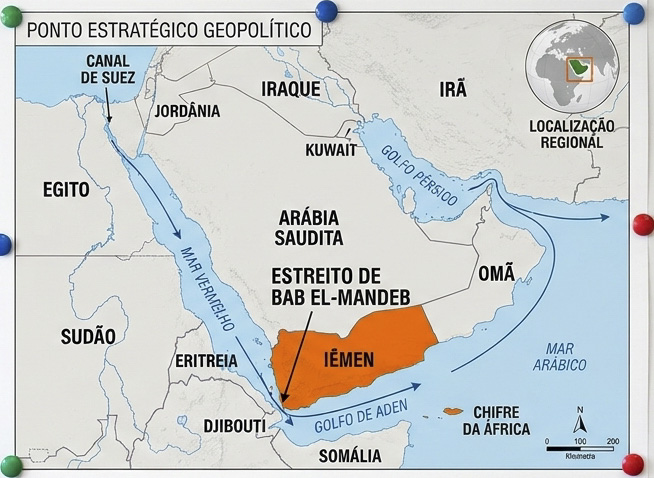
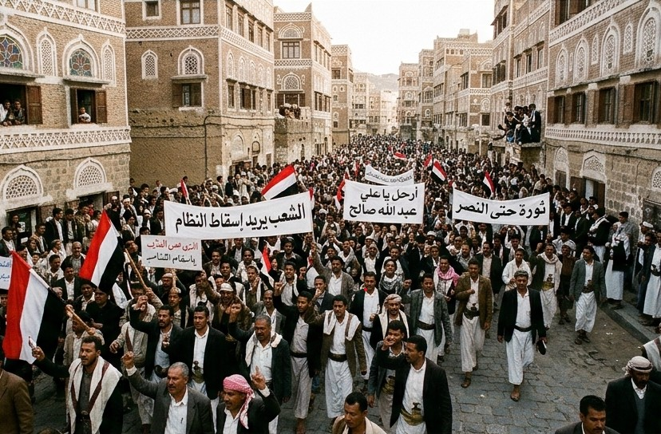
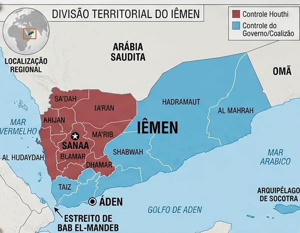
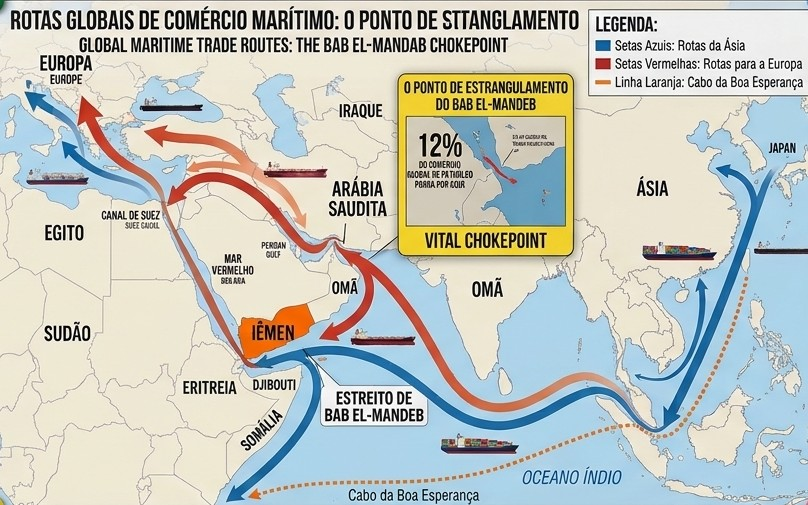
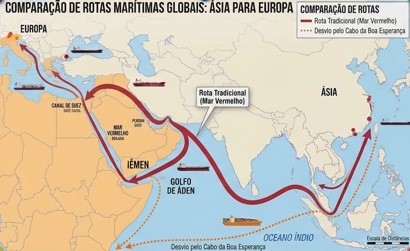

Clique em um tópico para ver o conteúdo.

O Iêmen está localizado na extremidade sudoeste da Península Arábica, no Oriente Médio. Em termos de fronteiras terrestres, o país faz divisa ao norte com a Arábia Saudita e ao leste com Omã. Suas costas marítimas são voltadas ao sul pelo Golfo de Áden e ao oeste pelo Mar Vermelho.
Do ponto de vista da geografia física e geopolítica, o ponto de maior relevância do país é o Estreito de Bab el-Mandeb. Esse canal marítimo é uma das "gargantas estratégicas" (chokepoints) do comércio global, pois faz a ligação entre o Mar Vermelho e o Oceano Índico (através do Golfo de Áden).
Por conta dessa posição geográfica, quem controla o território do Iêmen consegue monitorar ou intervir diretamente na rota que leva ao Canal de Suez, por onde navegam diariamente navios petroleiros e cargueiros que abastecem a Europa e a Ásia.

A origem do conflito no Iêmen envolve um histórico de fragilidade econômica, desemprego e disputas entre diferentes grupos étnicos e religiosos. Historicamente, o país já era dividido entre Iêmen do Norte e Iêmen do Sul, tendo sido unificado apenas em 1990, o que manteve tensões políticas profundas.
O estopim para a crise atual ocorreu no contexto da Primavera Árabe em 2011, quando intensos protestos populares forçaram a renúncia do presidente Ali Abdullah Saleh. A transição de governo para seu vice, Abdrabbuh Mansur Hadi, não conseguiu estabilizar a economia nem unir o país.
Aproveitando a fraqueza institucional do Estado, o grupo rebelde Houthi (Ansar Allah) — alinhado a uma vertente do islamismo xiita e com base no norte do país — iniciou uma ofensiva militar. Em 2014 e 2015, os Houthis tomaram o controle da capital Sanaa, forçando o governo oficial a se deslocar para a cidade portuária de Áden e dando início à guerra civil moderna.
Acompanhe os principais marcos históricos e geopolíticos do conflito iemenita ao longo dos anos:
Protestos massivos no Iêmen forçam a renúncia do presidente autoritário Ali Abdullah Saleh, iniciando uma transição política instável.
O grupo rebelde xiita Houthi, descontente com o novo governo, invade e domina a capital do país, Sanaa, depondo o presidente Hadi.
A Arábia Saudita, temendo a influência do Irã na região, lidera uma coalizão militar de países sunitas e inicia bombardeios aéreos no Iêmen.
Devido à destruição dos sistemas de água e esgoto pelos bombardeios, o Iêmen registra mais de 1 milhão de casos de cólera em uma crise sanitária histórica.
Combates intensificados pelo controle de Hodeidah, porto por onde entra 80% da ajuda humanitária. Um cessar-fogo parcial é assinado na Suécia, mas as violações continuam.
É assinada uma trégua que reduz temporariamente a intensidade dos combates e permite a entrada de alguns navios de combustível, trazendo um alívio breve aos civis.
Os Houthis iniciam ataques com drones e mísseis contra navios comerciais no Estreito de Bab el-Mandeb em solidariedade à Faixa de Gaza, provocando contra-ataques navais dos EUA e do Reino Unido.
O Iêmen segue dividido em dois governos paralelos. Mais de 22 milhões de iemenitas continuam dependendo de ajuda internacional para sobreviver em meio ao colapso econômico.

O território iemenita não possui uma autoridade central única e encontra-se severamente dividido entre forças locais e atores internacionais:

Embora a guerra tenha origens locais, os interesses em jogo ultrapassam as fronteiras do Iêmen e envolvem fatores geopolíticos e econômicos mundiais:

As consequências do conflito afetam tanto a população local quanto o comércio internacional: